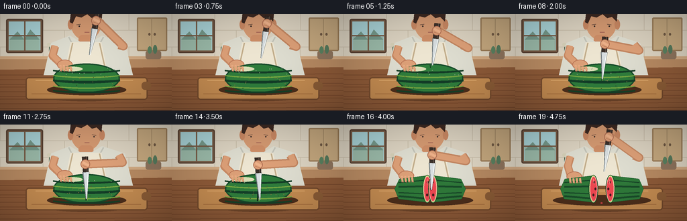
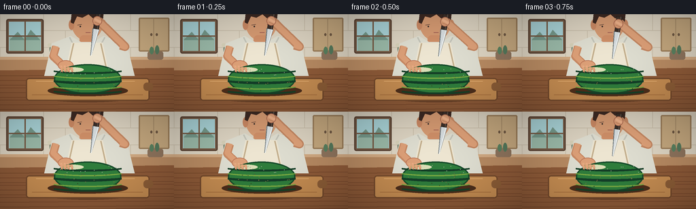

CODING AGENTS AS PIXEL WORLD MODELS
traex/GPT-5.6-Sol · motion_rationality_0008
点击播放 · 原生 RGB 像素
逐轮保存的候选
回放视频、检查图与代码变化。
每份候选均可单独播放。实际图片检查记录在下方工具轨迹中。
候选 01播放与检查图
点击播放 · 原生 RGB 像素


展开代码变化
--- 上一保存版本
+++ 本次保存版本
@@ -0,0 +1,220 @@
+from pathlib import Path
+import math
+import numpy as np
+from PIL import Image, ImageDraw, ImageFilter
+import artifact_io
+
+W,H,N,S = 256,144,20,3
+rng = np.random.default_rng(8)
+
+def sc(v): return int(round(v*S))
+def pts(seq): return [(sc(x),sc(y)) for x,y in seq]
+def ellipse(d, box, fill, outline=None, width=1): d.ellipse(tuple(sc(x) for x in box), fill=fill, outline=outline, width=sc(width) if outline else 1)
+def rect(d, box, fill, outline=None, width=1): d.rectangle(tuple(sc(x) for x in box), fill=fill, outline=outline, width=sc(width) if outline else 1)
+def rr(d, box, rad, fill, outline=None, width=1): d.rounded_rectangle(tuple(sc(x) for x in box), radius=sc(rad), fill=fill, outline=outline, width=sc(width) if outline else 1)
+def line(d, xy, fill, width=1, joint='curve'): d.line(pts(xy), fill=fill, width=sc(width), joint=joint)
+def poly(d, xy, fill, outline=None): d.polygon(pts(xy), fill=fill, outline=outline)
+def smooth(x):
+ x=max(0,min(1,x)); return x*x*(3-2*x)
+def lerp(a,b,t): return a+(b-a)*t
+
+def background(frame):
+ # softly textured warm kitchen, rendered deterministically
+ y=np.linspace(0,1,H*S)[:,None,None]
+ top=np.array([233,224,205],float); bot=np.array([180,139,99],float)
+ arr=np.broadcast_to(top*(1-y)+bot*y,(H*S,W*S,3)).copy()
+ noise=np.random.default_rng(110+frame).normal(0,0.65,arr.shape[:2])[:,:,None]
+ arr=np.clip(arr+noise,0,255).astype(np.uint8)
+ im=Image.fromarray(arr,'RGB'); d=ImageDraw.Draw(im)
+ # wall tiles and grout
+ rect(d,(0,0,256,73),'#ddd4c2')
+ for yy in [24,49,72]: line(d,[(0,yy),(256,yy)],'#c9beaa',1)
+ for row,yy in enumerate([0,24,49]):
+ off=0 if row%2==0 else 32
+ for xx in range(-off,257,64): line(d,[(xx,yy),(xx,yy+24)],'#c9beaa',1)
+ # window, late daylight
+ rr(d,(9,7,64,58),3,'#795d47','#5b4435',2); rect(d,(13,11,60,54),'#a9d3d7')
+ rect(d,(14,34,59,54),'#9ab9a8')
+ poly(d,[(14,38),(26,26),(36,38),(45,23),(59,38)],'#75988a')
+ line(d,[(36.5,10),(36.5,55)],'#765a44',2); line(d,[(12,32),(61,32)],'#765a44',2)
+ # side cabinet and small kitchen objects
+ rr(d,(204,5,249,55),2,'#c4a77e','#9b7d59',2); line(d,[(226,6),(226,54)],'#a18764',1)
+ ellipse(d,(221,28,224,32),'#6e5843'); ellipse(d,(229,28,232,32),'#6e5843')
+ # counter backsplash ledge
+ rect(d,(0,63,256,87),'#b78a62'); rect(d,(0,63,256,67),'#d0a982')
+ rr(d,(73,48,88,67),2,'#65866a','#475d49',1); ellipse(d,(74,46,87,52),'#7e9d79')
+ rr(d,(70,43,91,48),2,'#d6d0b8');
+ rr(d,(217,55,240,67),3,'#8e745d'); ellipse(d,(220,48,226,59),'#59805f'); ellipse(d,(228,46,234,59),'#54785b')
+ # tabletop with subtle grain
+ poly(d,[(0,83),(256,79),(256,144),(0,144)],'#8d5a38')
+ for k in range(10):
+ yy=91+k*6 + (k%3)
+ line(d,[(0,yy),(256,yy-2)],(111+4*(k%2),67,40),1)
+ return im
+
+def draw_person(d, t, grip, left_shift):
+ # head and hair behind the action
+ ellipse(d,(105,-14,151,39),'#d59a72')
+ # ears
+ ellipse(d,(101,8,109,23),'#c98863'); ellipse(d,(148,8,156,23),'#c98863')
+ # hair silhouette
+ poly(d,[(104,12),(106,-7),(116,-13),(142,-10),(152,0),(151,11),(144,4),(137,6),(130,0),(121,5),(113,3),(108,14)],'#3c2922')
+ # face shadows / focused expression
+ line(d,[(114,16),(120,15)],'#583f35',1); line(d,[(137,15),(143,16)],'#583f35',1)
+ ellipse(d,(117,17,119,19),'#332a27'); ellipse(d,(139,17,141,19),'#332a27')
+ line(d,[(126,27),(133,27)],'#9d5c51',1)
+ # neck and torso, apron
+ rr(d,(117,31,139,51),6,'#cf8f68')
+ poly(d,[(76,43),(104,32),(119,41),(137,41),(152,32),(186,43),(198,91),(65,91)],'#dfded1')
+ # sleeve seams and apron
+ line(d,[(102,34),(113,55)],'#c4c4b9',2); line(d,[(154,34),(143,54)],'#c4c4b9',2)
+ poly(d,[(105,42),(151,42),(161,91),(95,91)],'#eee6d2')
+ line(d,[(108,43),(98,88)],'#c3ae8c',2); line(d,[(148,43),(158,88)],'#c3ae8c',2)
+ # left arm reaches forward and stays planted on the left half
+ lx=98-left_shift*0.62; ly=76+min(2,left_shift*.15)
+ line(d,[(82,48),(78,62),(lx-7,ly-2)],'#c98a64',12)
+ line(d,[(82,47),(78,61),(lx-7,ly-2)],'#dda078',8)
+ # right arm bends naturally with the moving knife hand
+ gx,gy=grip
+ elbow=(184+2*math.sin(t*.35),51+0.18*(gy-27))
+ line(d,[(177,46),elbow,(gx+2,gy)],'#c48762',13)
+ line(d,[(177,45),elbow,(gx+2,gy)],'#dda078',9)
+ # left palm and fingers over rind
+ ellipse(d,(lx-13,ly-8,lx+10,ly+7),'#dda078','#b97355',1)
+ for j in range(4):
+ x=lx-8+j*5
+ line(d,[(x,ly),(x+1,ly+8)],'#e8ad84',3)
+ line(d,[(x+2,ly+5),(x+2,ly+9)],'#ad684f',1)
+ return (lx,ly)
+
+def whole_melon(cx,cy,cut_amt=0):
+ # clipped striped rind sprite
+ sw,sh=sc(100),sc(45)
+ layer=Image.new('RGBA',(sw,sh),(0,0,0,0)); ld=ImageDraw.Draw(layer)
+ ld.ellipse((1,1,sw-2,sh-2),fill='#2f7d3c',outline='#174c2b',width=sc(2))
+ # organic lengthwise stripes
+ for yy,col,wid in [(7,'#153f27',3),(14,'#77a842',2),(22,'#143f28',4),(30,'#77a842',2),(37,'#173f27',3)]:
+ ld.arc((-sc(12),sc(yy-8),sw+sc(12),sc(yy+8)),0,180,fill=col,width=sc(wid))
+ ld.ellipse((sc(11),sc(5),sc(44),sc(12)),fill=(160,199,101,65))
+ # tiny rind texture
+ for k in range(25):
+ x=int(rng.uniform(8,sw/S-8)*S); y=int(rng.uniform(5,sh/S-5)*S)
+ ld.ellipse((x,y,x+sc(1),y+sc(1)),fill=(28,82,38,100))
+ return layer, (sc(cx-50),sc(cy-22.5)), cut_amt
+
+def paste_whole(im,cx,cy,cut_amt):
+ layer,pos,_=whole_melon(cx,cy,cut_amt); im.paste(layer,pos,layer)
+ d=ImageDraw.Draw(im)
+ if cut_amt>0:
+ # widening dark incision as blade traverses the fruit
+ y0=cy-20; y1=cy-20+38*cut_amt
+ line(d,[(cx,y0),(cx-0.3+1.2*math.sin(cut_amt*4),y1)],'#112a20',max(1,2 if cut_amt>.55 else 1))
+ if cut_amt>.55: line(d,[(cx+1,y0+2),(cx+1,y1)],'#8ab14c',1)
+
+def draw_half(d, side, cx, cy, sep):
+ # curved outer shell with a flat freshly-cut inner face
+ if side=='L':
+ inner=cx+sep
+ poly(d,[(inner,cy-20),(inner,cy+20),(cx-42-sep*.15,cy+15),(cx-48-sep*.1,cy),(cx-41-sep*.15,cy-15)],'#2f793a','#174a28')
+ # broad rind stripes following long axis
+ for off in [-13,-4,7,14]:
+ line(d,[(cx-42-sep*.1,cy+off*.75),(inner-5,cy+off)],'#1a4c2a',3 if off in [-4,14] else 2)
+ # rind then red flesh on cut face (visible obliquely)
+ ellipse(d,(inner-7,cy-21,inner+7,cy+21),'#cae186','#174a28',1)
+ ellipse(d,(inner-5.3,cy-18.7,inner+5.8,cy+18.7),'#ef4851','#f6a29a',1)
+ face_x=inner+1
+ else:
+ inner=cx-sep
+ poly(d,[(inner,cy-20),(inner,cy+20),(cx+42+sep*.15,cy+15),(cx+48+sep*.1,cy),(cx+41+sep*.15,cy-15)],'#2f793a','#174a28')
+ for off in [-13,-4,7,14]:
+ line(d,[(inner+5,cy+off),(cx+42+sep*.1,cy+off*.75)],'#1a4c2a',3 if off in [-4,14] else 2)
+ ellipse(d,(inner-7,cy-21,inner+7,cy+21),'#cae186','#174a28',1)
+ ellipse(d,(inner-5.8,cy-18.7,inner+5.3,cy+18.7),'#ef4851','#f6a29a',1)
+ face_x=inner-1
+ # black seeds on the cut plane
+ for ox,oy in [(0,-10),(2,0),(-1,9)]:
+ x=face_x+ox*(1 if side=='L' else -1)
+ ellipse(d,(x-1.4,cy+oy-2,x+1.4,cy+oy+2),'#421d20')
+ # glossy fresh cut highlight
+ line(d,[(face_x-1,cy-15),(face_x,cy-7)],'#ff8b83',1)
+
+def draw_knife_and_hand(d, tip, angle, phase):
+ tx,ty=tip; a=math.radians(angle); ux,uy=math.sin(a),math.cos(a); nx,ny=math.cos(a),-math.sin(a)
+ blade_len=40
+ bx,by=tx-ux*blade_len,ty-uy*blade_len
+ # blade shadow/edge and metallic body
+ blade=[(bx+nx*5,by+ny*5),(bx-nx*5,by-ny*5),(tx-nx*1.0,ty-ny*1.0),(tx+nx*.5,ty+ny*.5)]
+ poly(d,blade,'#d8dee0','#4e5558')
+ line(d,[(bx+nx*3.5,by+ny*3.5),(tx,ty)],'#f7fbf8',1)
+ line(d,[(bx-nx*4,by-ny*4),(tx-nx,ty-ny)],'#788184',1)
+ # dark handle above blade
+ hx,hy=bx-ux*23,by-uy*23
+ handle=[(bx+nx*4,by+ny*4),(bx-nx*4,by-ny*4),(hx-nx*4.5,hy-ny*4.5),(hx+nx*4.5,hy+ny*4.5)]
+ poly(d,handle,'#3a2f29','#171412')
+ line(d,[(hx+nx*2,hy+ny*2),(bx+nx*2,by+ny*2)],'#69594e',1)
+ # hand wrapped around handle, thumb crossing it
+ gripx,gripy=bx-ux*12,by-uy*12
+ ellipse(d,(gripx-7,gripy-7,gripx+7,gripy+7),'#dda078','#aa684f',1)
+ line(d,[(gripx-4,gripy-3),(gripx+5,gripy+2)],'#efb28b',4)
+ line(d,[(gripx-4,gripy+2),(gripx+4,gripy+5)],'#bd7658',1)
+ return (hx,hy),(gripx,gripy)
+
+def render(i):
+ t=i
+ descend=smooth((t-1)/11)
+ lift=smooth((t-14)/5)
+ # clean downward push, then withdrawal; slight sawing near the bottom
+ if t<=14:
+ tipy=lerp(61,112,descend)
+ tipx=130 + (1.5*math.sin((t-8)*1.25) if t>=8 else lerp(4,0,descend))
+ angle=lerp(-10,2,descend) + (2*math.sin(t*1.4) if 8<=t<=14 else 0)
+ else:
+ tipy=lerp(112,70,lift); tipx=130+3*lift; angle=lerp(2,-7,lift)
+ a=math.radians(angle); ux,uy=math.sin(a),math.cos(a)
+ bx,by=tipx-ux*40,tipy-uy*40
+ grip=(bx-ux*12,by-uy*12)
+ sep=14*smooth((t-14)/5)
+ im=background(i)
+ d=ImageDraw.Draw(im)
+ # cast shadow and cutting board
+ ellipse(d,(43,105,215,130),'#684128')
+ rr(d,(38,94,220,128),5,'#c38b51','#754b2d',2)
+ line(d,[(47,119),(210,119)],'#a66e3d',1)
+ line(d,[(53,99),(198,99)],'#dfaa6d',1)
+ rr(d,(211,101,225,113),5,'#8a5c36')
+ # person must be behind fruit but arms/hands in front: draw body/arms now
+ draw_person(d,t,grip,sep)
+ # fruit shadow
+ ellipse(d,(70-sep,105,188+sep,121),(76,46,27))
+ if t<=14:
+ cut_amt=max(0,min(1,(tipy-72)/40))
+ paste_whole(im,129,96,cut_amt)
+ else:
+ d=ImageDraw.Draw(im)
+ draw_half(d,'L',129-sep,96,sep*.10)
+ draw_half(d,'R',129+sep,96,sep*.10)
+ # juice bead appearing on the board
+ if t>=17:
+ ellipse(d,(127,116,130,118),'#c83e43')
+ d=ImageDraw.Draw(im)
+ # knife remains in the foreground, visibly entering and leaving the cut
+ draw_knife_and_hand(d,(tipx,tipy),angle,t/19)
+ # restore left fingers in front of rind for clear contact
+ lx=98-sep*.62; ly=76+min(2,sep*.15)
+ for j in range(4):
+ x=lx-8+j*5
+ line(d,[(x,ly+2),(x+1,ly+9)],'#e4a57d',3)
+ line(d,[(x+1,ly+8),(x+2,ly+10)],'#a9654d',1)
+ # soft cinematic vignette
+ arr=np.array(im).astype(np.float32)
+ yy,xx=np.mgrid[0:H*S,0:W*S]
+ dx=(xx-W*S/2)/(W*S/2); dy=(yy-H*S/2)/(H*S/2)
+ vig=np.clip(1-0.12*(dx*dx+dy*dy),.78,1)[:,:,None]
+ arr=np.clip(arr*vig,0,255).astype(np.uint8)
+ return Image.fromarray(arr).resize((W,H),Image.Resampling.LANCZOS)
+
+def main():
+ frames=np.stack([np.asarray(render(i).convert('RGB'),dtype=np.uint8) for i in range(N)])
+ artifact_io.save(frames,Path(__file__).resolve().parent)
+
+if __name__=='__main__': main()
可观测工具轨迹
实际执行的命令与返回图片。
命令 1exit 0
/bin/bash -lc "cat prompt.txt && printf '\\n---RULES---\\n' && cat GENERATION_RULES.md && printf '\\n---SPEC---\\n' && cat task_spec.json"
命令 2exit 0
/bin/bash -lc "find . -maxdepth 2 -type f -printf '%p %s bytes\\n' | sort && printf '\\nTOOLS\\n' && command -v ffmpeg || true && command -v blender || true && command -v python3 || true"
命令 3exit 0
/bin/bash -lc 'cat artifact_io.py'
命令 4exit 0
/bin/bash -lc "cat > generate.py <<'PY'
from pathlib import Path
import math
import numpy as np
from PIL import Image, ImageDraw, ImageFilter
import artifact_io
W,H,N,S = 256,144,20,3
rng = np.random.default_rng(8)
def sc(v): return int(round(v*S))
def pts(seq): return [(sc(x),sc(y)) for x,y in seq]
def ellipse(d, box, fill, outline=None, width=1): d.ellipse(tuple(sc(x) for x in box), fill=fill, outline=outline, width=sc(width) if outline else 1)
def rect(d, box, fill, outline=None, width=1): d.rectangle(tuple(sc(x) for x in box), fill=fill, outline=outline, width=sc(width) if outline else 1)
def rr(d, box, rad, fill, outline=None, width=1): d.rounded_rectangle(tuple(sc(x) for x in box), radius=sc(rad), fill=fill, outline=outline, width=sc(width) if outline else 1)
def line(d, xy, fill, width=1, joint='curve'): d.line(pts(xy), fill=fill, width=sc(width), joint=joint)
def poly(d, xy, fill, outline=None): d.polygon(pts(xy), fill=fill, outline=outline)
def smooth(x):
x=max(0,min(1,x)); return x*x*(3-2*x)
def lerp(a,b,t): return a+(b-a)*t
def background(frame):
# softly textured warm kitchen, rendered deterministically
y=np.linspace(0,1,H*S)[:,None,None]
top=np.array([233,224,205],float); bot=np.array([180,139,99],float)
arr=np.broadcast_to(top*(1-y)+bot*y,(H*S,W*S,3)).copy()
noise=np.random.default_rng(110+frame).normal(0,0.65,arr.shape[:2])[:,:,None]
arr=np.clip(arr+noise,0,255).astype(np.uint8)
im=Image.fromarray(arr,'RGB'); d=ImageDraw.Draw(im)
# wall tiles and grout
rect(d,(0,0,256,73),'#ddd4c2')
for yy in [24,49,72]: line(d,[(0,yy),(256,yy)],'#c9beaa',1)
for row,yy in enumerate([0,24,49]):
off=0 if row%2==0 else 32
for xx in range(-off,257,64): line(d,[(xx,yy),(xx,yy+24)],'#c9beaa',1)
# window, late daylight
rr(d,(9,7,64,58),3,'#795d47','#5b4435',2); rect(d,(13,11,60,54),'#a9d3d7')
rect(d,(14,34,59,54),'#9ab9a8')
poly(d,[(14,38),(26,26),(36,38),(45,23),(59,38)],'#75988a')
line(d,[(36.5,10),(36.5,55)],'#765a44',2); line(d,[(12,32),(61,32)],'#765a44',2)
# side cabinet and small kitchen objects
rr(d,(204,5,249,55),2,'#c4a77e','#9b7d59',2); line(d,[(226,6),(226,54)],'#a18764',1)
ellipse(d,(221,28,224,32),'#6e5843'); ellipse(d,(229,28,232,32),'#6e5843')
# counter backsplash ledge
rect(d,(0,63,256,87),'#b78a62'); rect(d,(0,63,256,67),'#d0a982')
rr(d,(73,48,88,67),2,'#65866a','#475d49',1); ellipse(d,(74,46,87,52),'#7e9d79')
rr(d,(70,43,91,48),2,'#d6d0b8');
rr(d,(217,55,240,67),3,'#8e745d'); ellipse(d,(220,48,226,59),'#59805f'); ellipse(d,(228,46,234,59),'#54785b')
# tabletop with subtle grain
poly(d,[(0,83),(256,79),(256,144),(0,144)],'#8d5a38')
for k in range(10):
yy=91+k*6 + (k%3)
line(d,[(0,yy),(256,yy-2)],(111+4*(k%2),67,40),1)
return im
def draw_person(d, t, grip, left_shift):
# head and hair behind the action
ellipse(d,(105,-14,151,39),'#d59a72')
# ears
ellipse(d,(101,8,109,23),'#c98863'); ellipse(d,(148,8,156,23),'#c98863')
# hair silhouette
poly(d,[(104,12),(106,-7),(116,-13),(142,-10),(152,0),(151,11),(144,4),(137,6),(130,0),(121,5),(113,3),(108,14)],'#3c2922')
# face shadows / focused expression
line(d,[(114,16),(120,15)],'#583f35',1); line(d,[(137,15),(143,16)],'#583f35',1)
ellipse(d,(117,17,119,19),'#332a27'); ellipse(d,(139,17,141,19),'#332a27')
line(d,[(126,27),(133,27)],'#9d5c51',1)
# neck and torso, apron
rr(d,(117,31,139,51),6,'#cf8f68')
poly(d,[(76,43),(104,32),(119,41),(137,41),(152,32),(186,43),(198,91),(65,91)],'#dfded1')
# sleeve seams and apron
line(d,[(102,34),(113,55)],'#c4c4b9',2); line(d,[(154,34),(143,54)],'#c4c4b9',2)
poly(d,[(105,42),(151,42),(161,91),(95,91)],'#eee6d2')
line(d,[(108,43),(98,88)],'#c3ae8c',2); line(d,[(148,43),(158,88)],'#c3ae8c',2)
# left arm reaches forward and stays planted on the left half
lx=98-left_shift*0.62; ly=76+min(2,left_shift*.15)
line(d,[(82,48),(78,62),(lx-7,ly-2)],'#c98a64',12)
line(d,[(82,47),(78,61),(lx-7,ly-2)],'#dda078',8)
# right arm bends naturally with the moving knife hand
gx,gy=grip
elbow=(184+2*math.sin(t*.35),51+0.18*(gy-27))
line(d,[(177,46),elbow,(gx+2,gy)],'#c48762',13)
line(d,[(177,45),elbow,(gx+2,gy)],'#dda078',9)
# left palm and fingers over rind
ellipse(d,(lx-13,ly-8,lx+10,ly+7),'#dda078','#b97355',1)
for j in range(4):
x=lx-8+j*5
line(d,[(x,ly),(x+1,ly+8)],'#e8ad84',3)
line(d,[(x+2,ly+5),(x+2,ly+9)],'#ad684f',1)
return (lx,ly)
def whole_melon(cx,cy,cut_amt=0):
# clipped striped rind sprite
sw,sh=sc(100),sc(45)
layer=Image.new('RGBA',(sw,sh),(0,0,0,0)); ld=ImageDraw.Draw(layer)
ld.ellipse((1,1,sw-2,sh-2),fill='#2f7d3c',outline='#174c2b',width=sc(2))
# organic lengthwise stripes
for yy,col,wid in [(7,'#153f27',3),(14,'#77a842',2),(22,'#143f28',4),(30,'#77a842',2),(37,'#173f27',3)]:
ld.arc((-sc(12),sc(yy-8),sw+sc(12),sc(yy+8)),0,180,fill=col,width=sc(wid))
ld.ellipse((sc(11),sc(5),sc(44),sc(12)),fill=(160,199,101,65))
# tiny rind texture
for k in range(25):
x=int(rng.uniform(8,sw/S-8)*S); y=int(rng.uniform(5,sh/S-5)*S)
ld.ellipse((x,y,x+sc(1),y+sc(1)),fill=(28,82,38,100))
return layer, (sc(cx-50),sc(cy-22.5)), cut_amt
def paste_whole(im,cx,cy,cut_amt):
layer,pos,_=whole_melon(cx,cy,cut_amt); im.paste(layer,pos,layer)
d=ImageDraw.Draw(im)
if cut_amt>0:
# widening dark incision as blade traverses the fruit
y0=cy-20; y1=cy-20+38*cut_amt
line(d,[(cx,y0),(cx-0.3+1.2*math.sin(cut_amt*4),y1)],'#112a20',max(1,2 if cut_amt>.55 else 1))
if cut_amt>.55: line(d,[(cx+1,y0+2),(cx+1,y1)],'#8ab14c',1)
def draw_half(d, side, cx, cy, sep):
# curved outer shell with a flat freshly-cut inner face
if side=='L':
inner=cx+sep
poly(d,[(inner,cy-20),(inner,cy+20),(cx-42-sep*.15,cy+15),(cx-48-sep*.1,cy),(cx-41-sep*.15,cy-15)],'#2f793a','#174a28')
# broad rind stripes following long axis
for off in [-13,-4,7,14]:
line(d,[(cx-42-sep*.1,cy+off*.75),(inner-5,cy+off)],'#1a4c2a',3 if off in [-4,14] else 2)
# rind then red flesh on cut face (visible obliquely)
ellipse(d,(inner-7,cy-21,inner+7,cy+21),'#cae186','#174a28',1)
ellipse(d,(inner-5.3,cy-18.7,inner+5.8,cy+18.7),'#ef4851','#f6a29a',1)
face_x=inner+1
else:
inner=cx-sep
poly(d,[(inner,cy-20),(inner,cy+20),(cx+42+sep*.15,cy+15),(cx+48+sep*.1,cy),(cx+41+sep*.15,cy-15)],'#2f793a','#174a28')
for off in [-13,-4,7,14]:
line(d,[(inner+5,cy+off),(cx+42+sep*.1,cy+off*.75)],'#1a4c2a',3 if off in [-4,14] else 2)
ellipse(d,(inner-7,cy-21,inner+7,cy+21),'#cae186','#174a28',1)
ellipse(d,(inner-5.8,cy-18.7,inner+5.3,cy+18.7),'#ef4851','#f6a29a',1)
face_x=inner-1
# black seeds on the cut plane
for ox,oy in [(0,-10),(2,0),(-1,9)]:
x=face_x+ox*(1 if side=='L' else -1)
ellipse(d,(x-1.4,cy+oy-2,x+1.4,cy+oy+2),'#421d20')
# glossy fresh cut highlight
line(d,[(face_x-1,cy-15),(face_x,cy-7)],'#ff8b83',1)
def draw_knife_and_hand(d, tip, angle, phase):
tx,ty=tip; a=math.radians(angle); ux,uy=math.sin(a),math.cos(a); nx,ny=math.cos(a),-math.sin(a)
blade_len=40
bx,by=tx-ux*blade_len,ty-uy*blade_len
# blade shadow/edge and metallic body
blade=[(bx+nx*5,by+ny*5),(bx-nx*5,by-ny*5),(tx-nx*1.0,ty-ny*1.0),(tx+nx*.5,ty+ny*.5)]
poly(d,blade,'#d8dee0','#4e5558')
line(d,[(bx+nx*3.5,by+ny*3.5),(tx,ty)],'#f7fbf8',1)
line(d,[(bx-nx*4,by-ny*4),(tx-nx,ty-ny)],'#788184',1)
# dark handle above blade
hx,hy=bx-ux*23,by-uy*23
handle=[(bx+nx*4,by+ny*4),(bx-nx*4,by-ny*4),(hx-nx*4.5,hy-ny*4.5),(hx+nx*4.5,hy+ny*4.5)]
poly(d,handle,'#3a2f29','#171412')
line(d,[(hx+nx*2,hy+ny*2),(bx+nx*2,by+ny*2)],'#69594e',1)
# hand wrapped around handle, thumb crossing it
gripx,gripy=bx-ux*12,by-uy*12
ellipse(d,(gripx-7,gripy-7,gripx+7,gripy+7),'#dda078','#aa684f',1)
line(d,[(gripx-4,gripy-3),(gripx+5,gripy+2)],'#efb28b',4)
line(d,[(gripx-4,gripy+2),(gripx+4,gripy+5)],'#bd7658',1)
return (hx,hy),(gripx,gripy)
def render(i):
t=i
descend=smooth((t-1)/11)
lift=smooth((t-14)/5)
# clean downward push, then withdrawal; slight sawing near the bottom
if t<=14:
tipy=lerp(61,112,descend)
tipx=130 + (1.5*math.sin((t-8)*1.25) if t>=8 else lerp(4,0,descend))
angle=lerp(-10,2,descend) + (2*math.sin(t*1.4) if 8<=t<=14 else 0)
else:
tipy=lerp(112,70,lift); tipx=130+3*lift; angle=lerp(2,-7,lift)
a=math.radians(angle); ux,uy=math.sin(a),math.cos(a)
bx,by=tipx-ux*40,tipy-uy*40
grip=(bx-ux*12,by-uy*12)
sep=14*smooth((t-14)/5)
im=background(i)
d=ImageDraw.Draw(im)
# cast shadow and cutting board
ellipse(d,(43,105,215,130),'#684128')
rr(d,(38,94,220,128),5,'#c38b51','#754b2d',2)
line(d,[(47,119),(210,119)],'#a66e3d',1)
line(d,[(53,99),(198,99)],'#dfaa6d',1)
rr(d,(211,101,225,113),5,'#8a5c36')
# person must be behind fruit but arms/hands in front: draw body/arms now
draw_person(d,t,grip,sep)
# fruit shadow
ellipse(d,(70-sep,105,188+sep,121),(76,46,27))
if t<=14:
cut_amt=max(0,min(1,(tipy-72)/40))
paste_whole(im,129,96,cut_amt)
else:
d=ImageDraw.Draw(im)
draw_half(d,'L',129-sep,96,sep*.10)
draw_half(d,'R',129+sep,96,sep*.10)
# juice bead appearing on the board
if t>=17:
ellipse(d,(127,116,130,118),'#c83e43')
d=ImageDraw.Draw(im)
# knife remains in the foreground, visibly entering and leaving the cut
draw_knife_and_hand(d,(tipx,tipy),angle,t/19)
# restore left fingers in front of rind for clear contact
lx=98-sep*.62; ly=76+min(2,sep*.15)
for j in range(4):
x=lx-8+j*5
line(d,[(x,ly+2),(x+1,ly+9)],'#e4a57d',3)
line(d,[(x+1,ly+8),(x+2,ly+10)],'#a9654d',1)
# soft cinematic vignette
arr=np.array(im).astype(np.float32)
yy,xx=np.mgrid[0:H*S,0:W*S]
dx=(xx-W*S/2)/(W*S/2); dy=(yy-H*S/2)/(H*S/2)
vig=np.clip(1-0.12*(dx*dx+dy*dy),.78,1)[:,:,None]
arr=np.clip(arr*vig,0,255).astype(np.uint8)
return Image.fromarray(arr).resize((W,H),Image.Resampling.LANCZOS)
def main():
frames=np.stack([np.asarray(render(i).convert('RGB'),dtype=np.uint8) for i in range(N)])
artifact_io.save(frames,Path(__file__).resolve().parent)
if __name__=='__main__': main()
PY
python3 generate.py
ls -lh pixels.npz inspection.png index.html frames/00.png frames/19.png"保存候选 1 份；完成命令 4 次；可验证图片返回 0 张。原始 API 响应与完整日志保留在本地。